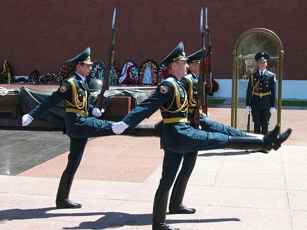

Askeri törenlerde veya nöbet değişimlerinde görmüş olabileceğimiz değişik bir yürüyüş şekli vardır: Asker ayaklarını yere paralel olacak şekilde dizlerini bükmeden kaldırıp indirerek yürür, örneğin Kremlinde böyle bir yürüyüşün resmi şöyle:

Bu yürüyüşe goose step yani kaz adımı deniyor.
Tarihsel olarak Prusya’dan çıkan bu yürüyüş zamanında misket tüfeği kullanılırken askerleri düzenli olarak savaş alanına getirmek amacıyla kullanılıyormuş; 19. yüzyıl ortalarında misket tüfeklerinin yerini tüfekler alınca da bu yürüyüşün gerekliliği kalmamış (çünkü tüfek isabeti yüksek bir silah olduğundan savaş alanına bu kadar düzenli gelmek dezavantajlı hale geliyor). Fakat askeri bir sembol olarak, Prusya gelenekleri arasında törenlerde ve geçişlerde kullanılmak üzere kalmış.1
Prusya’nın yanı sıra bu yürüyüşü kullanan ruslar ve çinliler de var (tarihsel olarak her yere yayılışı ilk Prusya’dan çıkıyor), fakat bu yürüyüşün batı dünyasında günümüzdeki algısı biraz da naziler ile ilintili. Prusya askeri geleneklerine (en azıdan bu açıdan) sahip çıkan Wehrmacht tören geçişlerinde bu kaz adımı yürüyüşünü kullanıyordu, amerika ve ingiltere de bu disiplinli yürüyüş tarzını olumsuz bir algı olarak körü körüne askeri itaatlilik ile ilişkilendirmişti. Günümüz batı dünyasında bu sebeple olumsuz bakılan ve kullanılmayan bu yürüyüşü (ve askeriliğiyle bilinen Prusya geleneklerini) bu sebeple Almanya’da ya da Amerika’da aramak abes olacaktır (bu yürüyüşün Weimar Cumhuriyeti, Nazi Almanyası ve Doğu Almanya’da varken günümüz Almanya’sında olmadığını şu videodan da görebilirsiniz:https://youtu.be/9vwkErUGMjc). Ve fakat ilginç bir şekilde Şili’de Prusya geleneklerini görebilmek mümkündür.
19. yüzyılın sonunda ve 20. yüzyılın başında alman askeri eğitmenler tarafından ordusu modernleştirilen Şili askeri törenlerinde günümüzde dahi Prusya geleneklerine sahip çıkmaktadır :D Örneğin 2016’daki şu askeri yürüyüşe bakabilirsiniz (askeri marş dahi avusturya marşı: Radetzky Marsch):
Peki Türkiye’de kaz adımı yok mu? Wikipedia’ya soracak olursak Türkiye’deki tarz yüksek adım, kaz adımına yakın fakat dizler bükülüyor. Fakat bu bilgi eksik, en basitinden Anıtkabir’i ziyaret etmiş ve muhafız değişimini görmüş herkes bilir ki bu tören sırasında kaz adımı kullanılır. Aslında TRT’nin 2017’deki şu haberinde2 doğrudan
The soldiers solemnly goose-step as they carry the wreaths, reflecting the historic Prussian influence on the Turkish army.
cümlesi yer almakta ki bu oldukça mantıklı: Özellikle de 1. dünya savaşı öncesi ve sırasındaki Alman Osmanlı yakınlaşması düşünülürse, Prusya askeri öğelerinden bazılarının Türk ordusunu etkilemiş olması kaçınılmaz.